Ancient rites of scheduling, made easy.
Cronomicon schedules and runs your Bash, Ansible, Terraform, PowerShell, Perl and Python jobs from one web console, across every host, department and network zone. It ships as one Go binary with one SQLite file, and it’s open source.
v2.2.0Latest release notesScore
last 24 hours and next 12, in time-lapse- bash
- ansible
- terraform
- powershell
- perl
- python
Every job, every run, one console
Cronomicon replaces the crontabs scattered across your servers with a single place to see what runs, when, where, and how it went. Here’s the real app, in both themes.
Start on the Dashboard, open a job in the catalog and run it: the Run dialog shows the targets, then asks you to confirm. Flip to light mode, open a run in History, and finish on a workflow’s steps.
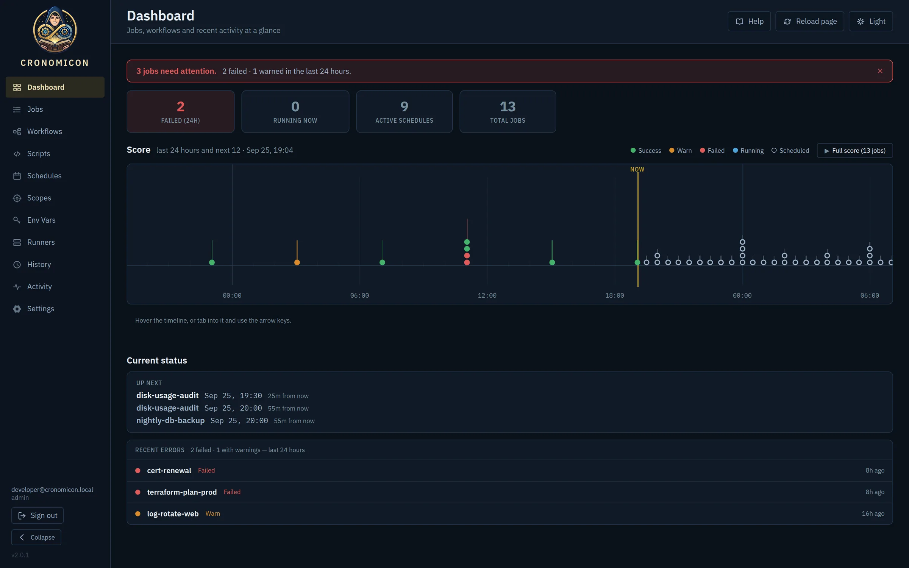
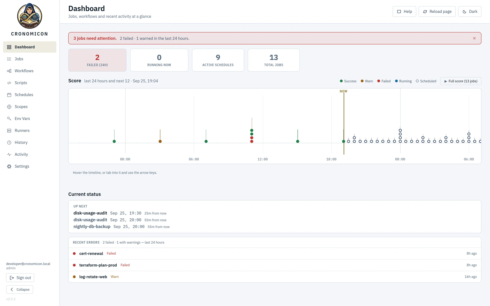
The Dashboard opens with what needs you.
- Attention banner. Failures and warnings from the last 24 hours, in one line.
- Stat tiles. Failed, running, active schedules and total jobs at a glance.
- The Score. The day behind you and the twelve hours ahead, on one timeline.
- Up next. The next three fires, and how long until each.
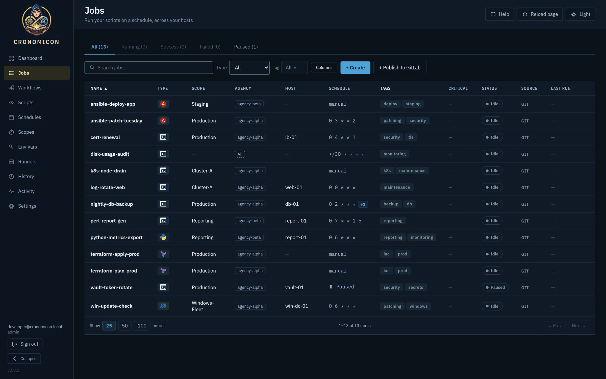
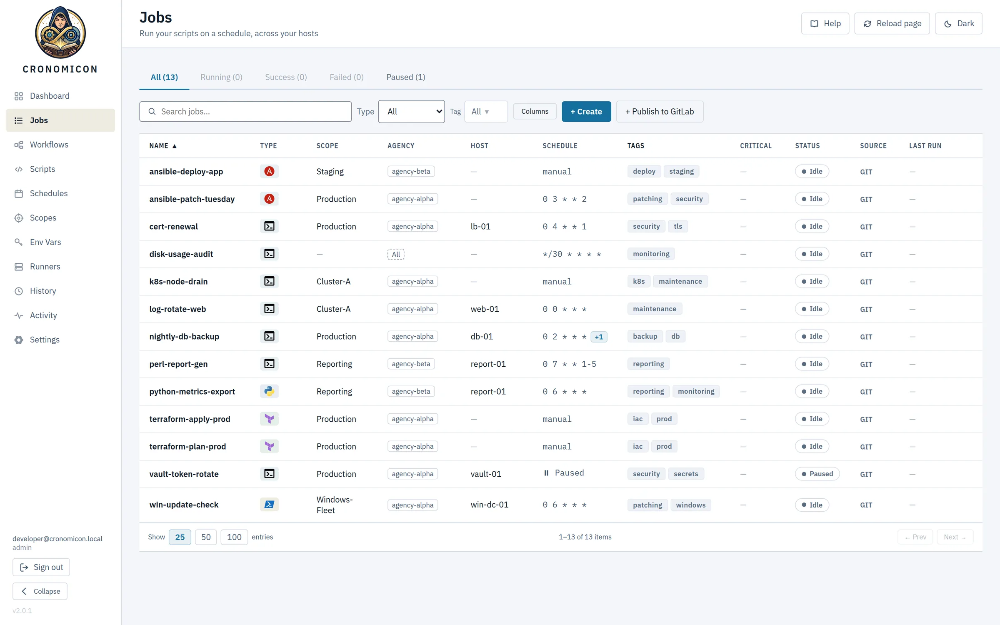
The Jobs catalog holds every job, and turns into a folder tree when the list gets long.
- Status tabs. Jump straight to what’s running, failed or paused.
- Filters. Search, filter by type or tag, and choose your columns.
- Where it runs. Type, scope, owning department and host pin for each job.
- Schedule. The cron expression, or manual.
- Status. Each job’s current state and last result.
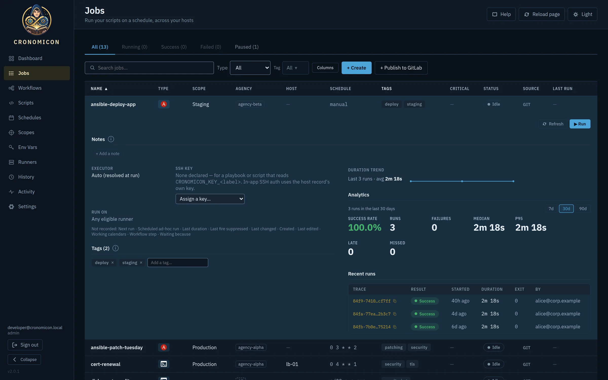
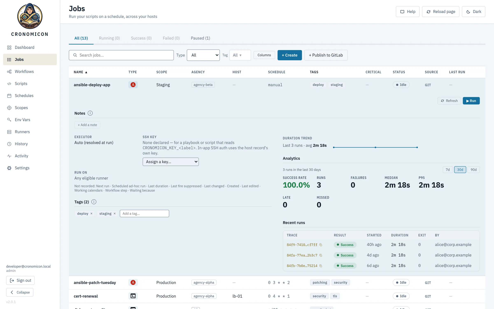
Expand any job to see how it has been doing, and what the next person needs to know.
- Notes, contact, critical flag. They stay attached to the job, so the next person sees them before they press Run.
- Duration trend. Spot a job that is getting slower.
- 7, 30 or 90 days. Pick the window the analytics cover.
- Analytics. Success rate, failures, median and p95, plus late and missed fires.
- Recent runs. Each with its trace ID, result, duration, exit code and who ran it.
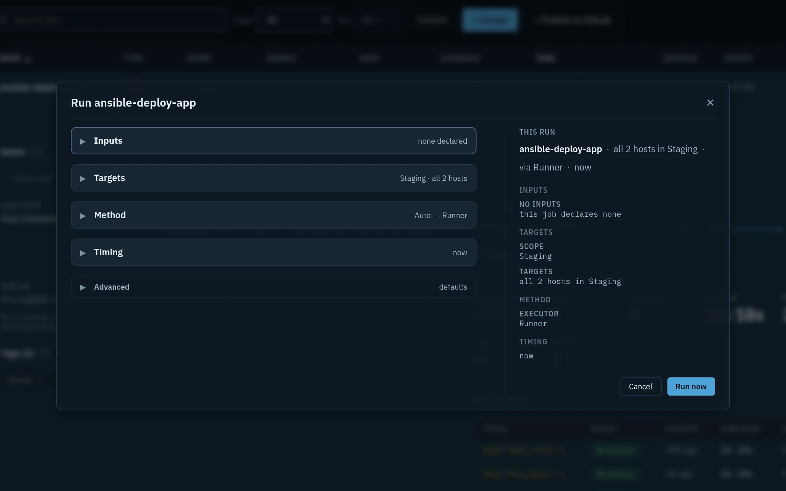
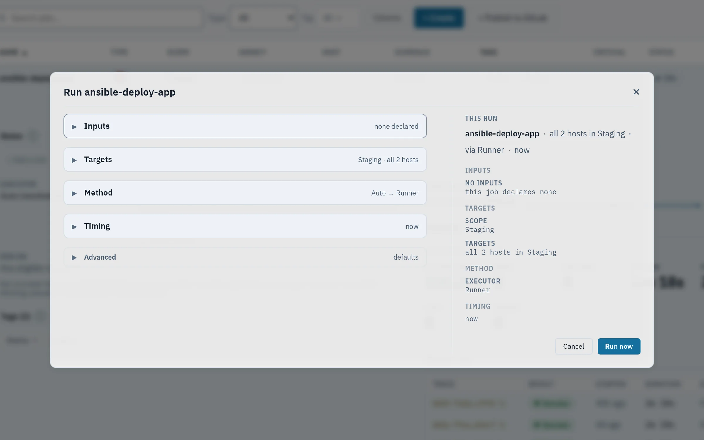
Every ad-hoc run goes through the Run dialog.
- Five sections. Inputs, target hosts, executor and runner, timing, and advanced overrides.
- Timing. Run now, or defer the run to a later time.
- This run. Exactly what will run, before you confirm.
- Confirm. Nothing runs until you press Run now.
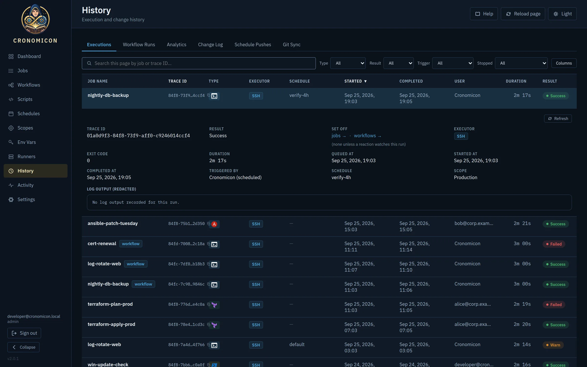
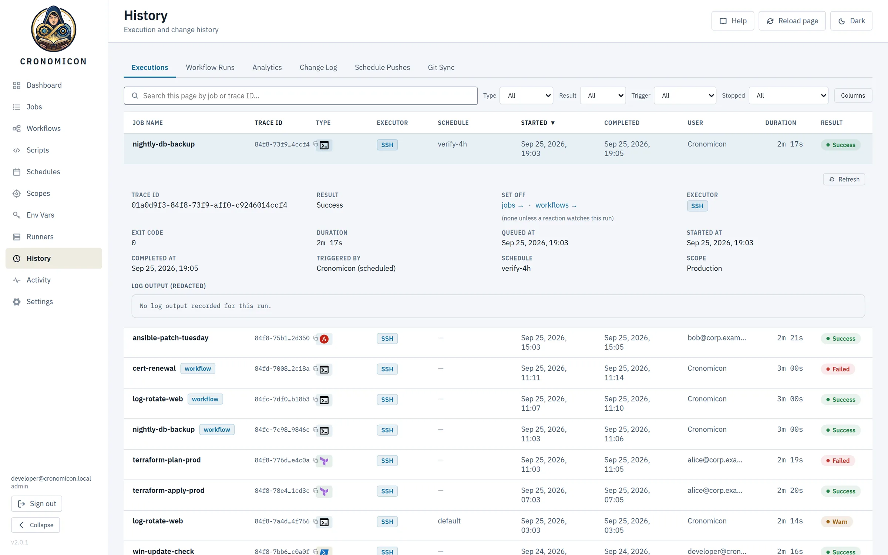
History records every run. Logs tail live while a job runs, and old logs can move to S3 without leaving the view.
- Every kind of history. Executions, workflow runs, analytics, changes, schedule pushes and Git sync.
- Search by trace ID. Or filter by type, result, trigger and how a run stopped.
- The full record. Trace ID, exit code, who or what triggered it, and where it ran.
- Masked logs. Output is stored with secrets redacted.
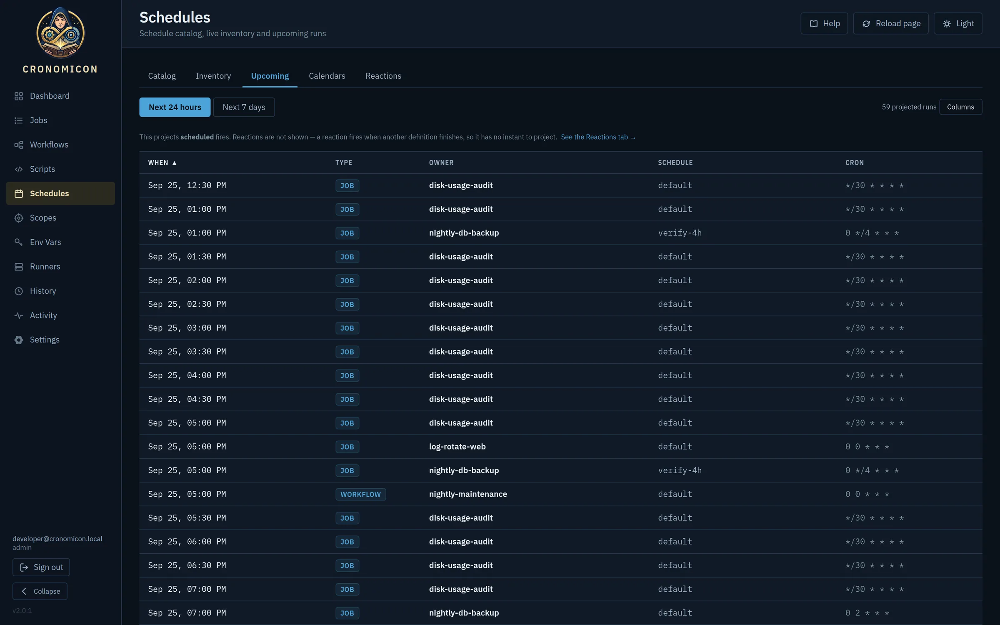
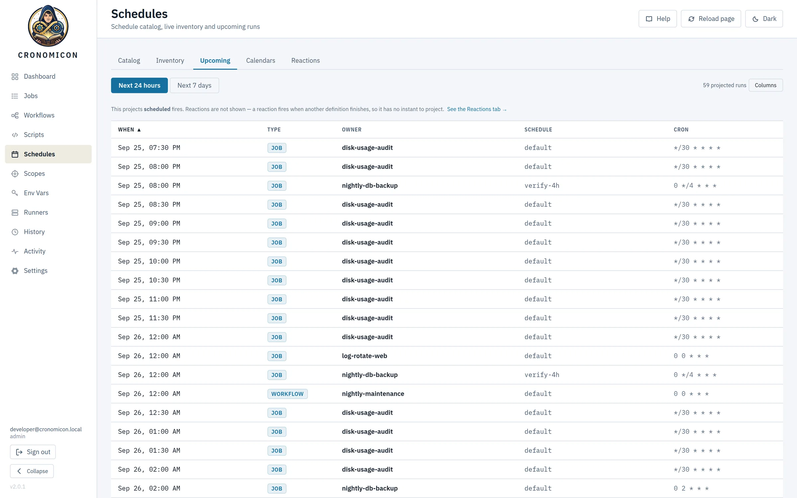
The Schedules view shows what fires next.
- Calendars and reactions. Working calendars and reactions have their own tabs beside Upcoming.
- Next day or week. Upcoming projects every fire in the window.
- Every projected fire. When it fires, what it runs and the cron behind it.
- Reusable schedules. One definition, like verify-4h, can drive many jobs.
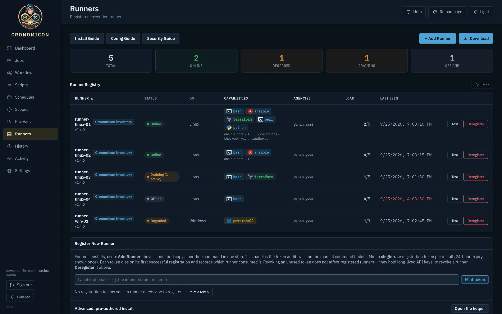
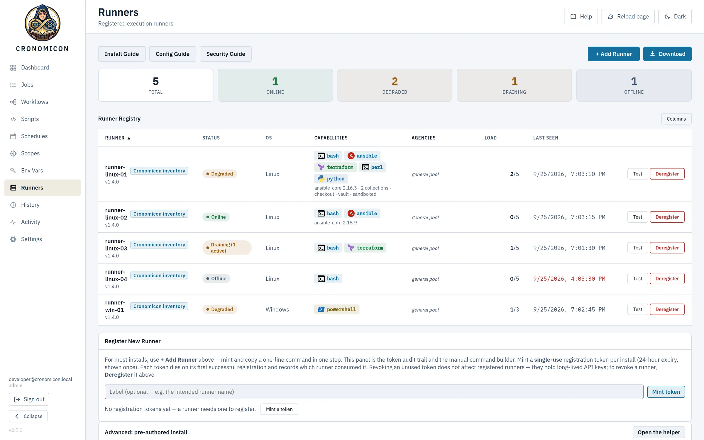
Runners are your execution fleet.
- Fleet health. Online, degraded, draining and offline counts at a glance.
- Status. Drain a runner or recover it from the console.
- Capabilities. Each runner reports its Ansible version, collections, Vault access and Python.
- Load. Running jobs against each runner’s limit.
- Add a runner. Mint a single-use token and paste one command on the host.
Build jobs from parts you already have
Scripts, schedules and variables are separate, reusable pieces. Put them together into a job, then chain jobs into a workflow. Change a schedule once and every job that uses it follows.
-
Register a script
A playbook, a
.tfdirectory or a shell script. Cronomicon scans it for the environment variables it reads, so you know what to define before the first run.backup-db.shpatch.ymlplan.tf -
Bind it to a scope and a schedule
A scope is the set of hosts a job may touch. A schedule is a cron expression with an optional activation window. Both are reusable.
Production0 2 * * *business-hours -
Attach variables and secrets by reference
A job names the variables it needs and never holds their values. Values are resolved when the job is dispatched, from Cronomicon’s encrypted store or from HashiCorp Vault.
DB_HOSTvault:db/backup -
Run it, or chain it
The job is live. Add it to a workflow with other jobs, with branches, parallel groups and values passed from one step to the next.
nightly-db-backup
apiVersion: cronomicon.io/v1 kind: Job metadata: name: nightly-db-backup spec: script_ref: backup-db.sh scope: Production # where it runs schedules: - name: nightly cron: "0 2 * * *" # when it runs timeout_seconds: 3600 retries: 2
cronomicon validate, and review changes like any other code.Six ways to start a run, one set of rules
Cron is only the beginning. Every source that can start a run passes through the same gates, so a paused job stays paused however it’s triggered.
A schedule
Cron with activation windows, intervals and one-off runs.
0 */4 * * *A click
Run now or later from the Run dialog, with per-run overrides.
Run nowA Git push
A GitLab webhook syncs definitions the moment they merge.
git pushAn API token
Service accounts trigger runs from CI or other tools.
POST /trigger/…Another run finishing
Reactions fire when a job or workflow succeeds, fails or is stopped.
when a run failsA file arriving
Runners watch drop directories, including NFS and CIFS shares.
/drop/*.csv
Chain jobs into workflows
Put jobs in order, branch on the result, and run steps in parallel. Each step can pass its output to the next. Draw a workflow on a graph canvas or write it in YAML.
Swipe sideways to see the whole workflow.
- Branch on the resultSend a failed plan to the on-call path instead of apply. Branches can nest.
- Run steps in parallelGroup jobs to run side by side. Each step has its own retries, inputs and soft-cancel behaviour.
- Pass values between stepsA step prints
::cronomicon-output name=VERSION::1.4.2and the next step readsVERSIONas an environment variable. - Nest and reactA workflow can call another workflow, up to three levels deep. Reactions start new runs when one finishes, with a hard depth limit so they can’t loop.
Runners dial out. Nothing dials in.
Reach ordinary hosts over SSH, directly or through a bastion. For isolated networks, install a runner agent inside the zone. It polls Cronomicon for work over HTTPS, so the zone needs no inbound firewall rules.
Swipe sideways to see the whole topology.
Isolation is set by operators. Each scope belongs to an agency, which is a department or network zone. A job is only handed to a runner in the same agency. Runners can’t choose their own agency.
Work goes where it can run. Runners advertise what they can do, such as Ansible collections, Vault access or Terraform. A job waits for a runner that meets its requirements, and you can pin a run to a tagged runner.
Checkouts are opt-in. Running full Ansible projects requires an allowlisted repository, a commit pinned by the server, a read-only deploy key, and a secret scan of the checked-out tree.
Built for the departments that share it
Several teams can share one Cronomicon. Each team sees and runs only its own jobs, secrets never reach a log, and every change is recorded.
02:00:04 Connecting to db-01 as svc_backup 02:00:04 Authenticating with token [REDACTED] 02:00:05 pg_dump app_db > /backups/app_db.sql 02:02:11 Uploading with key [REDACTED] 02:02:17 Done, exit 0
- alice@corp.example changed the schedule of nightly-db-backup
- bob@corp.example drained runner linux-03
- Git sync updated 3 definitions
- svc-deploy triggered prod-release with an API token
- Access by department
- AD groups map to roles and agencies through access grants, with seven permissions. Team leads can manage access for their own agencies without full admin rights.
- Secrets by reference
- Stored secrets are encrypted with AES-256-GCM, or read from HashiCorp Vault at dispatch. Become-passwords are never passed as environment variables.
- Masked everywhere
- Secret values, SSH credentials and per-run overrides are replaced with
[REDACTED]in run logs and the audit stream before anything is written. - A complete record
- Runs, config changes, pushes and syncs land in one Activity feed. Retention is set per data type, and logs can be archived to S3.
- Calendars and SLAs
- Working calendars skip holidays and change freezes. SLA deadlines flag late runs, and missed-run detection catches schedules that never fired.
- Undo built in
- Every definition keeps a revision history. Deleted jobs go to a recycle bin until an admin restores or purges them.
One binary. One database file.
The API, scheduler and web UI are one Go process backed by a single SQLite file, with no message broker or separate database server. Look around in demo mode first. For a real deployment, run it as a container behind your reverse proxy and identity provider; the administrator manual walks through a first deploy.
$ docker run --rm -p 127.0.0.1:8080:8080 \
-e CRONOMICON_DEV_AUTH=true \
-e CRONOMICON_DEV_SEED=true \
-e CRONOMICON_COOKIE_SECURE=false \
ghcr.io/resetsmith/cronomicon:2.2.0
Open http://localhost:8080 and choose Developer login. It skips single sign-on and loads sample data, which disappears when the container stops. Demo mode makes anyone who can reach the port an administrator, so keep it bound to 127.0.0.1.
$ docker run -d -p 8080:8080 \
-v /var/lib/cronomicon:/var/lib/cronomicon \
--env-file cronomicon.env \
ghcr.io/resetsmith/cronomicon:2.2.0
$ curl -fsSL https://cronomicon.example.com/install/crn_reg_… | sudo bash
- Runtime
- One static Go binary, UI embedded
- State
- SQLite,
/var/lib/cronomicon/cronomicon.db - Sign-in
- OIDC or trusted-header SSO
- Execution
- Built-in SSH, plus runner agents on Linux and Windows
- Metrics
- Prometheus at
/metrics - Backups
- Snapshots to S3 with
VACUUM INTO - License
- Apache-2.0
Retire the crontabs.
Read the administrator and user manuals before you deploy, then pull the images or build from source. Cronomicon is free to run, change and share under the Apache-2.0 license.
SHELL=/bin/bash MAILTO=""0 2 * * * root /opt/scripts/backup-db.sh*/30 * * * * root /opt/scripts/disk-usage.sh0 4 * * 1 root certbot renew --quiet0 0 * * * root /usr/sbin/logrotate /etc/logrotate.conf15 7 * * 1-5 ops perl /home/ops/report.pl# ask Dave